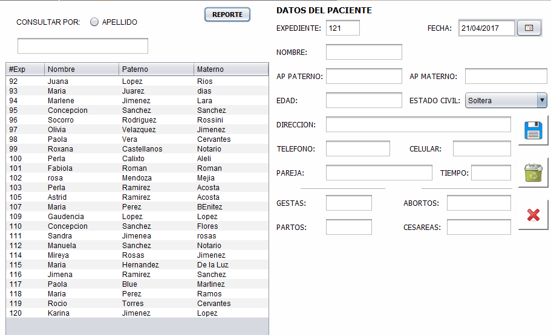

AYUDA PARA LA VENTANA "ALTA DE PACIENTES"
Pulsando el boton
en la ventana principal, se abrirá la siguiente ventana.
En esta ventana puede ingresar un nuevo paciente, con el número de expediente consecutivo que se despliega automáticamente.

En esta venta puede ejecutar las siguientes tres acciones por medio de los siguientes botones
-
Al oprimir este botón después de haber llenado los campos correspondientes se almacenaran los datos; en el caso de que se consulte la información de algún paciente ya existente y hacer un cambio en algún campo, el dato se actualizara.
-
Al oprimir este botón después de haber seleccionado algún paciente, será eliminado completamente de la base de datos, CUIDADO AL USARLO.
-

Al oprimir este botón cerrara la venta actual y quedara solo con la vista de la tabla de pacientes.